Collaborators · Group Work
Design Tools
This session explores the MiRo-E robot's capabilities and applies existing design tools to a case study regarding student wellbeing.
Chosen Case Study · MiRo-E Student Wellbeing
The aim is to develop a concept for MiRo-E as a student wellbeing companion. MiRo-E is an animal-like advanced robot. The "E" stands for Education, the variant of MiRo specifically designed to help students learn about STEM subjects, particularly computing and digital technologies (Hub, 2022).
Some first ideas include a companion personality that checks in on students during study sessions, detects signs of stress or burnout, and offers supportive interventions like breathing exercises or social nudges (Rice et al., 2024).
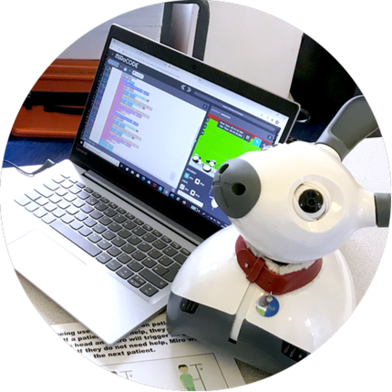
Fig 1.1 MiRo-E pictured beside the laptop used to run its early software.
Research Question
"How can the MiRo robot be expanded upon to help students (ages 18–24) with their overall well-being?"
Target Group: University students aged 18–24. This group faces lots of pressure from academic load, social adjustment, irregular routines, and limited access to consistent well-being support (Pande et al., 2025). The project focuses on both hard-working and slacking students.
Design Tool Methodology · User Innovation Toolkit
Three complementary methods from the User Innovation Toolkit (ugent.be) were selected, that together let us imagine, visualise, and evaluate how MiRo could interact with students (Prescott & Collins, 2015).
Scenario Analysis
Can be used to imagine future scenarios and reason through them to get a better understanding of the challenge. For the chosen use case, one could imagine scenarios where students sit down and talk with the MiRo robot: the robot asking questions, the student answering. The student's perspective can be used to reason through each moment, analysing the situation before MiRo is introduced to make visible what problems actually exist in the student's daily routine.
Storyboard
Can be used to visualise how a user uses a product or service. It tends to be more detailed than scenario analysis, to really visually understand what is happening, including images of MiRo talking and students listening, or capturing a specific expression, for example a panel showing MiRo's tail wagging as a student answers a question.
Experience Map
Can be used to visualise the experience the user goes through while using the product over time. Often used for comparison of the same scenario, one without the product and one with, or to visualise the intended effect. In this use case, most likely a comparison of a student studying and taking breaks with a MiRo robot versus without one.
Problem Space · Mindmap
This guided exploration covers the dimensions of wellbeing, how it might be detected, the scenarios MiRo can support, and the physical and verbal tools available to the robot.

Fig 1.2 Mindmap exploring wellbeing dimensions, detection methods, and MiRo's supporting scenarios. Created collaboratively in draw.io.
↗ View interactive sessionSystem Structure · Functional Breakdown
MiRo's functions divide into two core channels, verbal and physical, which can be used for detecting and responding to student wellbeing (Prescott et al., 2018): asking questions, replying to the student, overall wellbeing self check-ins, breathing exercises, helping in study sessions, suggesting a call to a friend. All conveyed through sound and body language like head nodding, tail wagging, ear turning, eye blinking, and locomotion.
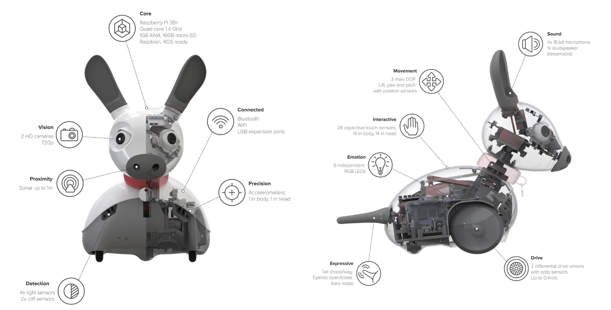
Fig 1.3 MiRo-E's sensor and actuator layout. The manufacturer describes 6 senses for natural interaction: moving, feeling, thinking, observing, speaking, hearing. Other specifications will be addressed later in the project.
↗ View MiRo-E websiteExperimental Design & Approach
Theatre exercises were proposed to rapidly test how students respond to MiRo interactions before committing to hardware or software development. A human plays the role of MiRo, according to Wizard-of-Oz methodology, and the student responds naturally. This approach aligns with prior work on spoken dialogue interaction and multimodal human-robot communication (Campbell, 2018).
A human plays MiRo initiating a basic wellbeing check-in. Do students engage? Do students feel comfortable? This makes it possible to compare different interaction styles ranging from proactive vs. reactive, gentle vs. direct, routine vs. spontaneous, by recording verbal answers and facial expressions in response to specific prompts. Results include testing different wellbeing question categories to find which resonate most with students.
Research Through Design
These plans are backed up by literature in our domain and for our robot (MIRO-E), as listed in the references below, although most findings from studying theatre exercises will lead to a final design implementation based on Research Through Design methodology. Recent work on adaptive multimodal interaction with MiRo-E further supports the relevance of this direction (Yang et al., 2026).
References
- Campbell, N. (2018). Using Multimodal Information to Support Spoken Dialogue Interaction between Humans and Robots without Intrusive Language processing. Proc. FAIM/ISCA Workshop on AI for Multimodal HRI, 4-8. doi:10.21437/AI-MHRI.2018-2
- Hub, K. (2022, February 10). Meet MIRO, a robot that cares. The Knowledge Hub. knowledge-hub.com
- Pande, A., Rani, A., Nachenahalli Bhuthegowda, B., & Mishra, D. (2025). Human-Robot Interaction for Stress Mitigation: A Pilot Study with Social Robot. HCII 2025, LNCS vol. 15769. doi.org/10.1007/978-3-031-93861-0_18
- Prescott, T., Mitchinson, B., Conran, S., Power, T., & Bridges, G. (2018). MiRo: Social Interaction and Cognition in an Animal-like Companion Robot. doi:10.1145/3173386.3177844
- Prescott, T., & Collins, E. (2015). MIRO: A Versatile Biomimetic Edutainment Robot. Advances in Computer Entertainment. doi.org/10.1145/2832932.2832978
- Rice, A., Klęczek, K., & Alimardani, M. (2024). The Effectiveness of Social Robots in Stress Management Interventions for University Students. ICSR 2023, LNCS vol. 14453. doi.org/10.1007/978-981-99-8715-3_16
- Yang, Y., Yap, P.S., Wijeakumar, S., Magassouba, A., & Deshpande, N. (2026). A Multimodal Adaptive Framework for Social Interaction with the MiRo-E Robot. Sensors, 26(4), 1209. doi.org/10.3390/s26041209
Story Building
This session explores the role of storytelling and narrative design in human-robot interaction, investigating how stories can help us understand, communicate, and critically evaluate robot behaviours in care settings.
Why Storytelling Matters in HRI
As emphasized in the lecture, storytelling is fundamental to how humans understand and relate to technology. Stories in HRI serve multiple purposes, including exploration, communication, critical reflection, and expectation management. Paepcke & Takayama (2010) demonstrated that setting expectations through narratives significantly influences perceived robot competence, with higher expectations leading to harsher judgments when robots underperform.
Design Tool Methodology · HRI Office-Script Template
A hybrid scenario-building tool was developed, combining structured scriptwriting with improvisational documentary-style reflection. This approach was grounded in research on scripting for participatory design and design documentaries, drawing inspiration from scenario-based design (van der Bijl-Brouwer & van der Voort, 2013), documentary film methods (Raijmakers et al., 2006), and improvisational theatre (Dertien et al., 2024).
The Template Structure
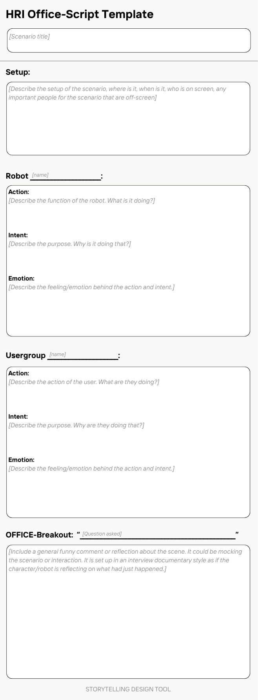
Fig 2.1 The HRI Office-Script Template, separating setup, robot, usergroup, and a documentary-style breakout for each scene.
The template is repeated as necessary to play out the full scenario.
Reasoning Behind the Template
This structure works because it directly addresses several core challenges in HRI design by moving beyond surface-level descriptions of interaction. By separating action, intent, and emotion, the template encourages designers to examine not only what users and robots do, but also the motivations, expectations, and feelings underlying those behaviors.
The added documentary breakout sections create deliberate moments for reflection and critique, helping teams avoid overly optimistic robot capabilities or ignored practical limitations (Dertien et al., 2024). The framework supports improvisation and incorporates multiple perspectives, leading to a more nuanced, empathetic, and realistic HRI design outcome (Raijmakers et al., 2006).
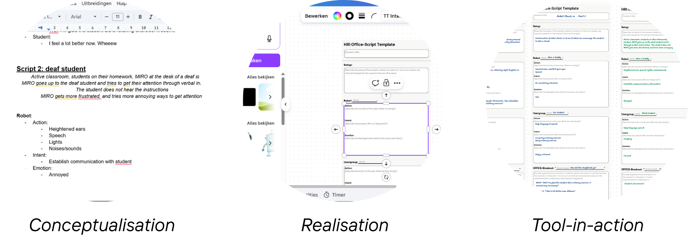
Fig 2.2 Tool development stages: Conceptualisation, Realisation, and Tool-in-action.
Scenarios
The template tool was applied to the student studybuddy case to further explore interactions with a MIRO-E robot. Two scenarios were developed: a Wellbeing Check-In (Frequent Use), and a Deaf Student (Edge Case).
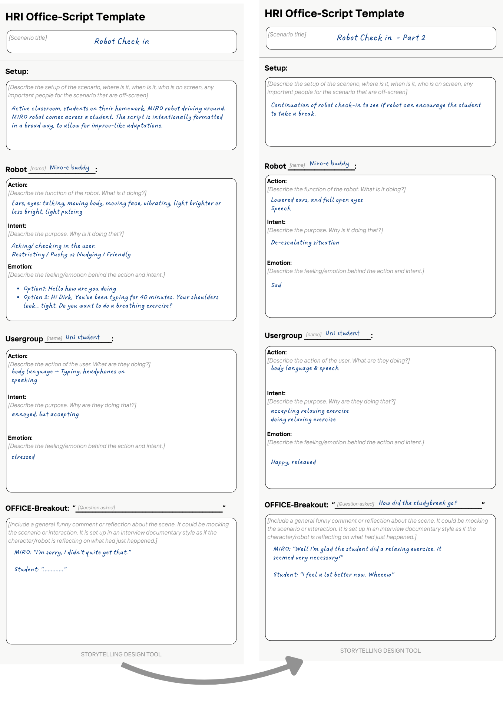
Fig 2.3 Scenario 1: Wellbeing Check-In (frequent use).
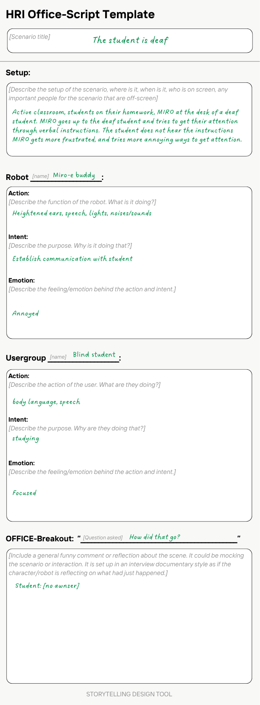
Fig 2.4 Scenario 2: Deaf Student (edge case).
The edge case shows that the robot was designed assuming auditory communication, without fallback strategies. The escalating frustration behaviour also raises questions about robot emotion displays: should robots show frustration with users? The template helps explore such cases and make them explicit. Applying the tool to the case reemphasises that designs must account for diverse users and unexpected contexts.
Evaluation of the Scenario Tool
Through designing the tool, scenarios were discussed more diversely and thoroughly than if explored through informal discussion alone. The structured format forced the group to make explicit assumptions about the robot's emotions, intentions, and behaviour. The edge-case scenario involving a deaf student exposed accessibility challenges and design assumptions that were overlooked in the primary use case, suggesting the tool helped achieve a more robust and inclusive design decision than would otherwise have been reached.
Reflection on the Scenario Tool
The tool provides structure while still allowing flexibility and creative exploration, so a multitude of scenarios can emerge from the same template while remaining comparable in format. The documentary bits expand on what characters were thinking and feeling, rather than only describing their actions, making scenarios more engaging and in-depth, and encouraging consideration of multiple perspectives (human, robot, bystander) as well as exaggerated or humorous framings. This reflects ideas from science fiction prototyping (Johnson, 2011), which emphasizes exploring desirable and undesirable futures to identify risks and opportunities.
Despite these strengths, the tool has limitations: written scripts cannot fully capture the physical and social dynamics of HRI and would benefit from video prototyping or theatre-based simulation; assigning emotions and intentions to robots risks encouraging anthropomorphism and unrealistic expectations; documentary breakouts could be improved through more systematic prompting; and the scenarios have not yet been validated with actual students or care workers, making user testing an important next step. The scenarios developed here also became the foundation for several later design decisions, particularly around robot behaviour, expression, and evaluation.
References
- Dertien, E., Van Delden, R., & Reidsma, D. (2024). Improvisation Theatre as HRI simulation tool. Proceedings of the 9th International Conference on Movement and Computing, 1-8. doi.org/10.1145/3658852.3659067
- Johnson, B.D. (2011). Science Fiction Prototyping: Designing the Future with SF. Morgan & Claypool.
- Paepcke, S., & Takayama, L. (2010). Judging a bot by its cover: An experiment on expectation setting for personal robots. Proceedings of HRI, 45-52. leilatakayama.org
- Raijmakers, B., Gaver, W.W., & Bishay, J. (2006). Design documentaries: Inspiring design research through documentary film. Proceedings of DIS, 229-238. dl.acm.org
- van der Bijl-Brouwer, M., & van der Voort, M.C. (2013). Exploring future use: Scenario based design. In Advanced Design Methods for Successful Innovation (pp. 57-77). Design United. 4tu.nl
Expression
This session used a course-provided tool, the Laban-based motion vocabulary workshop, to explore how a simple servo-based robot arm could still manage non-verbal expression.
Workshop Goals & Structure
This session focused on designing expressive robot motion using an SO-ARM101 robot arm controlled through TouchDesigner and a MIDI control panel. The goal was to explore how different motion mappings influence the perceived emotional and social qualities of robot behaviour. Through experiments based on Laban Movement Analysis (LMA) (Laban, 1966), animation principles (Thomas & Johnston, 1981), and expressive robotics literature (Ju & Hoffman, 2015), it was investigated how a simple servo-driven robotic arm can communicate intentions, emotions, and interaction cues without speech or facial expressions. Rather than programming specific emotional states, movement parameters such as speed, amplitude, timing, and trajectory were manipulated to create expressive behaviours.
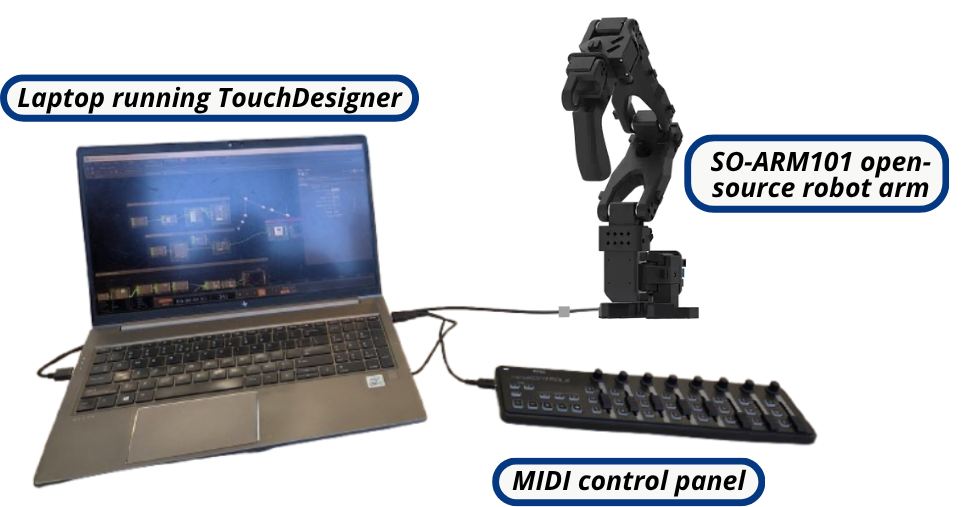
Fig 3.1 Setup: laptop running TouchDesigner, SO-ARM101 open-source robot arm, and MIDI control panel.
Expression Experiments
By correctly linking inputs and outputs in TouchDesigner, movements could be cloned: pressing 'record' on the MIDI panel remembered every servo movement so it could be replicated later, allowing rapid iteration of different scenarios, expressions, and emotions. Servo movement could be manipulated across joint position, movement speed, acceleration/deceleration, amplitude, frequency, motion coupling between joints, and global motion intensity ("master gain").
Exploration started with simple pulsing at different speeds and amplitudes. Already, this gave impressions of different emotions and personality factors: slow movement eluded to sadness or tiredness, higher speeds and amplitudes exuded excitement or clumsiness, and pauses with small oscillations before movement suggested hesitation or uncertainty.
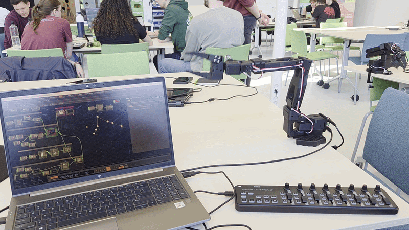
Fig 3.2 Pulsing motion test at varied speed and amplitude.
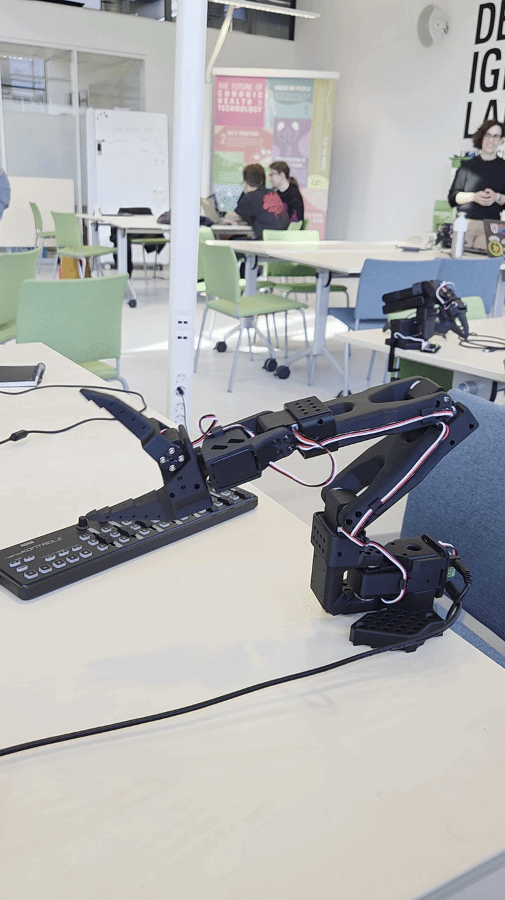
Fig 3.3 Expressive motion test: a startled, retreating reaction.
Later, more complex scenarios were explored to ideate expression for thorough situations and emotions, for example the robot sleeping, waking up, then seeing a piece of plastic: scared yet intrigued by it. Even with simple servos and a relatively simple tool setup, such complex scenarios could still be designed.
Reflection on Robot Expressions
The session was helpful for general exploration of non-verbal communication. It showed how diverse and thorough simple movements could be, and how effective they are for expressing goals, simple interactions, or emotions, for example when the robot hung its "head," it immediately looked sad, while no physical attributes changed. Speed of movement also had a great impact, suggesting a link between motion dynamics and perceived emotion, consistent with classic findings that motion alone can convey biological attributes (Johansson, 1973) and evoke perceptions of intentional behaviour (Heider & Simmel, 1944). Other than increased awareness of non-verbal communication and the importance of expression in design decisions, this session did not have specific relations to the student support use case. Although the workshop was exploratory, it influenced how we later thought about expressing empathy and feedback through MiRo's movements rather than only through speech.
References
- Ju, W., & Hoffman, G. (2015). Designing Robots With Movement in Mind. Journal of Human-Robot Interaction, 4(1), 1-15.
- Laban, R. (1966). Choreutics. London: Macdonald & Evans.
- Thomas, F., & Johnston, O. (1981). The Illusion of Life: Disney Animation. New York: Disney Editions.
- Johansson, G. (1973). Visual perception of biological motion and a model for its analysis.
- Heider, F., & Simmel, M. (144). An experimental study of apparent behavior.
Embodiment
This session explored robot embodiment and how a robot's physical appearance influences expectations, interaction, and suitability for different contexts.
Embodiment Analysis
Many social robot research projects still make use of existing platforms such as Nao and Pepper. While these robots are versatile and widely available, they are often used in contexts for which they were not specifically designed: research shows Pepper acting as a receptionist, educator, trainer, or healthcare assistant (Kushniruk, Kuang, & Borycki, 2025). Other domains use more specialised embodiments, such as seal-shaped robots in elderly care (PARO, 2024).
The session explored what would happen if designers had complete freedom over a robot's embodiment. A morphological overview was created using robots discussed during the course, comparing them on size, shape, materiality, colour, and whether they were human-shaped, animal-shaped, or abstract, alongside functionality requirements, context suitability, and expectation matching.
The overview showed that embodiment strongly influences perceived suitability. A large humanoid robot may be appropriate for navigation or reception tasks but less suitable as a tabletop companion. Animal-inspired robots such as MiRo or Paro appear approachable and comforting, while humanoid robots create stronger expectations regarding intelligence, communication, and capabilities. Embodiment is not only an aesthetic choice but shapes how users interpret and interact with the robot.
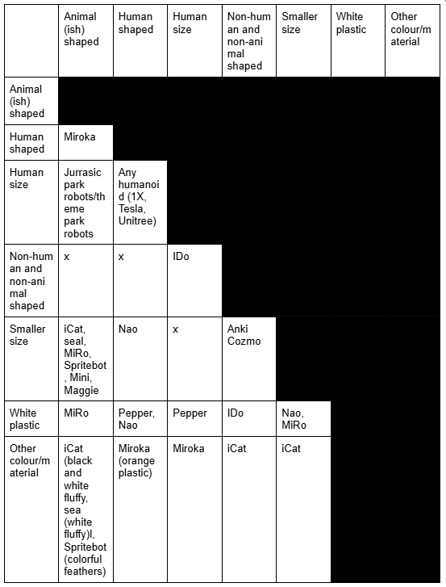
Fig 4.1 Morphological overview matrix comparing existing robot embodiments by shape, size, materiality, and contextual suitability.
Design Tool: Dreamworld & Embodiment Cards
To support designers in exploring alternative embodiments, two design tools were proposed: Dreamworld and an Embodiment Card Game.
Dreamworld
An AI-assisted embodiment design tool that allows designers to rapidly prototype robot concepts using generative AI. A designer begins with a simple sketch, silhouette, or description and uses prompts to generate alternative embodiments: colours, proportions, materials, and expressive features can be changed quickly for iterative exploration. The tool encourages designers to move beyond existing robots such as Pepper and Nao and consider embodiments tailored to specific use cases.
Embodiment Card Game
Each card presents a question related to robot embodiment, expression, or interaction, e.g. "How does your robot show joy?", "How does its appearance communicate its purpose?", or "How does a user know where the robot's attention is directed?" Answering these questions guides designers to consider the relationship between embodiment and behaviour, operationalising decisions about form-function relationships, perceived capabilities, and social expectations.
Session Findings & Reflection
An important insight was that embodiment creates expectations: a highly humanoid robot may lead users to assume advanced intelligence or social understanding, while an animal-inspired robot may be perceived as approachable and emotionally supportive, relating to anthropomorphism, expectation mismatch, and the Uncanny Valley. Physical robots also provide opportunities for proxemics (Hall, 1966), tangible interaction, and co-presence that purely virtual agents cannot offer (Wainer, Feil-Seifer, Shell, & Mataric, 2006); soft materials and animal-like features may encourage nurturing behaviour, while rigid humanoid forms can communicate competence or authority.
Applying these insights to the MiRo-E project encouraged more critical thinking about how the robot's appearance influences student expectations: embodiment should communicate the robot's role as a supportive wellbeing companion, and should align with actual capabilities to avoid misleading users or creating unrealistic expectations (Norman, 1999). This also confirmed that the interaction ideas developed earlier needed to fit MiRo's existing embodiment rather than assuming capabilities it did not have.
References
- Hall, E.T. (1966). The Hidden Dimension. Doubleday.
- Kushniruk, A.W., Kuang, W., & Borycki, E.M. (2025). The NAO Robot in Healthcare and Education: A Scoping Review. Studies in Health Technology and Informatics, 323, 374-378. doi.org/10.3233/SHTI250115
- Norman, D.A. (1999). Affordance, conventions, and design. Interactions, 6(3), 38-43. doi.org/10.1145/301153.301168
- Wainer, J., Feil-Seifer, D.J., Shell, D.A., & Mataric, M.J. (2006). The role of physical embodiment in human-robot interaction. ROMAN 2006, 117-122. IEEE. doi.org/10.1109/ROMAN.2006.314404
Sustainability & Ethics
This session explores the long-term impact of technology through Educational Live Action Role-Play (EduLARP).
EduLARP Tool: The LifeTimer
Researchers at Saxion Enschede developed the LifeTimer, which explores a scenario in which a technology publicly monitors and gives advice about health regulations. Through an app, the technology becomes widespread and people can opt in or out: the tool explores effects on individuals and society at large, asking participants to reflect on implications and regulation.
The LARP session included decoration, worldbuilding instruction videos, fictional news reports, and character description cards set in 2030. After role-playing a character and following how their life was affected by the technology over time, participants voted in a referendum on whether to support or restrict the LifeTimer, then reflected individually. The workshop was hosted by developer Verena Schulz, with Saxion co-teacher Afra Willems.
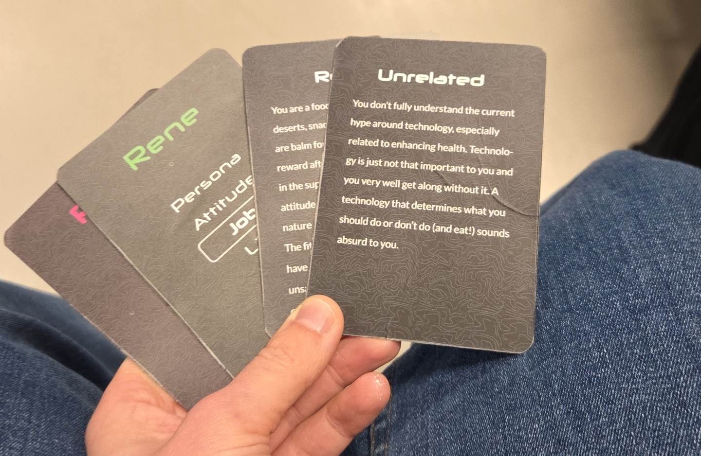
Fig 5.1 LifeTimer character card assigned for the roleplay.
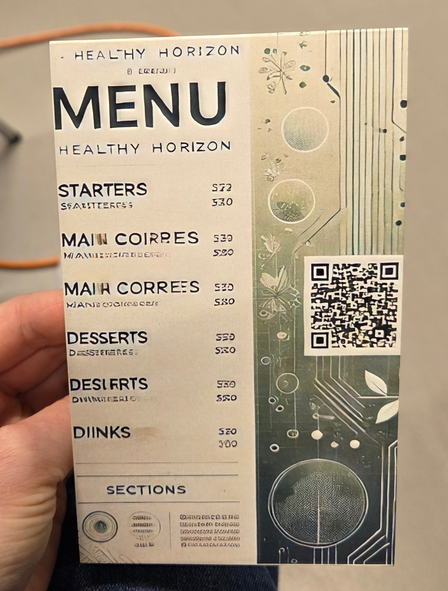
Fig 5.2 Worldbuilding decoration setting the 2030 scenario.
LARP Session Observations
Living out the character through LARP provided a personal perspective, forcing engagement with views unlike one's own, including life decisions the participant wouldn't make, or opposing views on the technology. Tension and argument between characters led to meaningful self-reflection.
Those who widely adopted the technology saw a drastic increase in life expectancy and were generally positive, but could feel conflicted due to loneliness or misunderstanding from less tech-positive loved ones. Those who didn't adopt it, or used only the free version, held varied opinions: some unconcerned, others struggling with its full societal integration, and some facing reduced access to insurance or loans as systems adapted around the technology. This felt unjust and unsettling.
This raised questions about who mandates such technologies, whether encouraging adoption for wellbeing limits autonomy, and who is responsible when predictions are treated as facts, touching on privacy, autonomy, and responsibility, aligned with key values affected by technology: privacy, trust, autonomy, accountability, and human welfare (Friedman & Kahn, 2003). The scenario showed parallels with the widespread adoption of AI in society and resembles the AI2027 speculative report. More intermittent reflection moments before the final referendum vote would have been valuable, reinforcing that ethical considerations should be intentionally designed into technology development before public release.
LARP & MiRo-E
The same EduLARP principle was later applied to the MiRo-E robot. Through self-made character cards and a group worksheet, adopting a character as an active stakeholder brought up concerns and tensions that needed addressing: for the MiRo-E and student wellbeing case, pets and parents should also be taken into account.
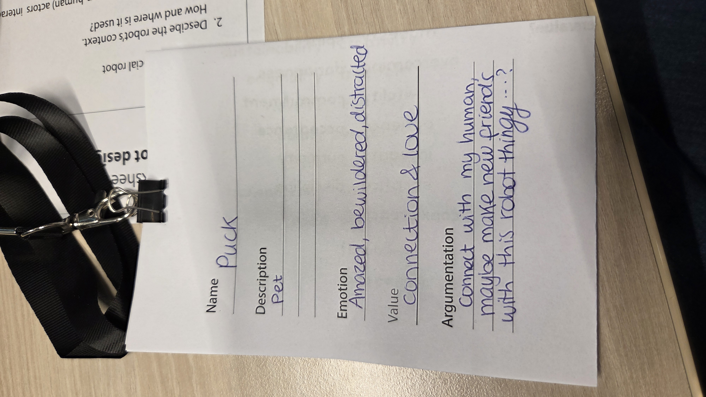
Fig 5.3 Self-made character card for the MiRo-E scenario.
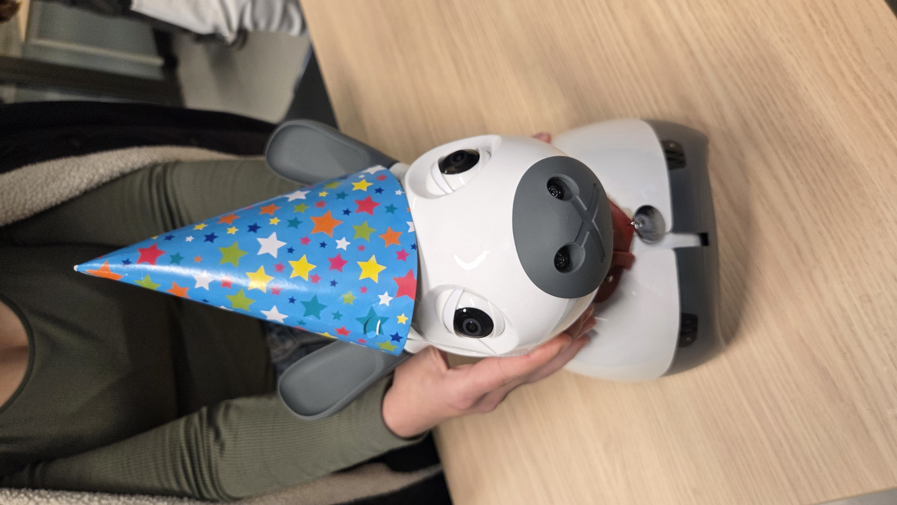
Fig 5.4 MiRo-E adopted as an active stakeholder.
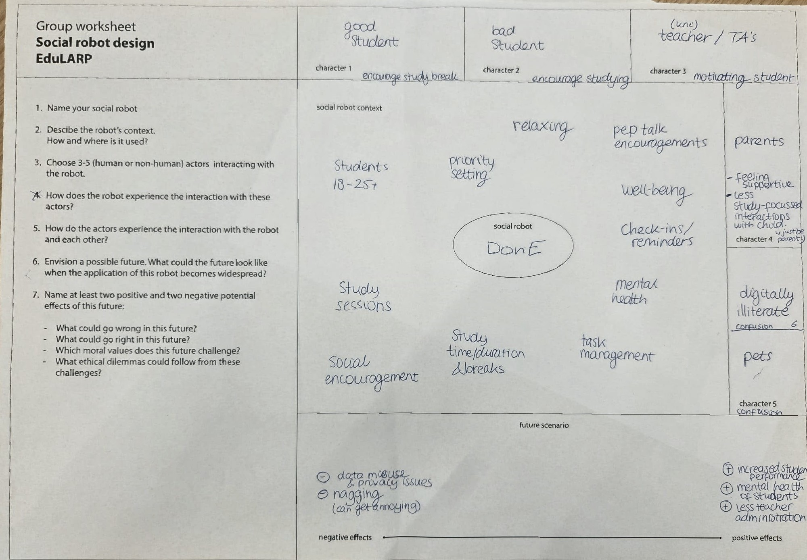
Fig 5.5 Group worksheet mapping future effects and dilemmas.
The future scenarios were less futuristic than the LifeTimer but still considered developer responsibility. A key finding: concerns become more complex when technology actively replaces human care. This relates to Sharkey & Sharkey (2010), who critique using robots as caregivers for children: replacement of human care can lead to reduced human contact, emotional deception, attachment problems, and developmental risks. Value sensitivity is crucial in robotics within care contexts. These discussions remained relevant throughout the remainder of the project and influenced later choices about appropriate robot behaviour and student autonomy.
References
- Friedman, B., & Kahn, P.H., Jr. (2003). Human values, ethics, and design. In The Human-Computer Interaction Handbook (pp. 1177-1201). Lawrence Erlbaum Associates. old.vsdesign.org
- Sharkey, A., & Sharkey, N. (2010). The crying shame of robot nannies: An ethical appraisal. Interaction Studies, 11(2), 161-190. doi.org/10.1075/is.11.2.01sha
Behaviour
This session explored embodiment and robot behaviour design, aiming to develop and test a high-level design tool that could support conceptualising robot behaviour before implementation on a physical robot.
Motivation
Behaviour implementation in robotics can be time-consuming and technically expensive, especially when iterating on interaction design. The focus was placed on a high-level design and testing tool supporting quick iteration of behavioural ideas, allowing early exploration of interaction patterns before committing to implementation. Brooks (1986) suggests that complex interaction patterns can emerge from relatively simple reactive behaviours tightly coupled to the environment, so the tool should function as a bridge between early conceptual design and technical implementation.
Technical Considerations
The behavioural possibilities of puppeteering the MiRo-E were considered. Main control was imagined through an X-BOX controller, most feasible for one person to control wheel movement plus quick basic gestures in eyes, ears, tail, and head simultaneously. The MIRO app allows moving additional features in more detail but is more time-consuming to calibrate and manage in a live Wizard-of-Oz puppeteering session.
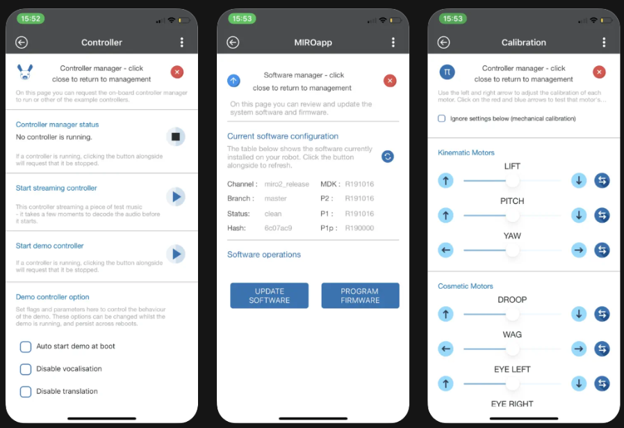
Fig 6.1 MIRO app screens: controller status, software configuration, and joint calibration.
Conceptualisation: Cards Against Robots
Designing robot behaviour presents a unique challenge, as unlike graphical interfaces, robots communicate through movement, posture, sounds, and physical presence. The assignment focused on creating a low-fidelity design tool to support discussion and prototyping of robot behaviour before software implementation.
Cards Against Robots, inspired by improvisational card games, helps participants explore both robot capabilities and interaction scenarios through three card categories:
Human Action Cards
Situations or user behaviours.
Robot Action Cards
Available robot actions and expressions.
Wildcard Cards
Unexpected events, tensions, or contextual changes.
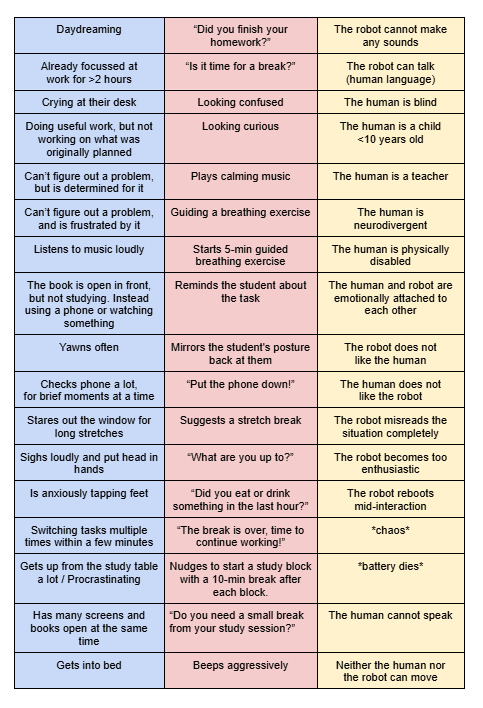
Fig 6.2 Example Human Action, Robot Action, and Wildcard cards.
Players combine cards from each category to generate an interaction scenario, then act it out while discussing and testing possible robot responses. The goal was not detailed software logic, but rapidly exploring how embodiment and behaviour might influence an interaction. The tool was designed to support discussion around reactive robot behaviour, where the robot responds directly to events in its environment, rather than first reasoning about goals and future states (a deliberative approach). By connecting human actions to immediate robot responses, the cards encouraged thinking about how behaviour emerges through interaction. Many of the situations and behaviours included on the cards were directly inspired by the scenarios, ethical concerns, and interaction ideas explored in earlier sessions.
References
- Brooks, R.A. (1986). A robust layered control system for a mobile robot. IEEE Journal of Robotics and Automation, 2(1), 14-23.
Tools in Action
This session iterated and validated the Cards Against Robots design tool by introducing structured scenario generation, embodied puppeteering, and evaluation criteria.
Refining the Tool
The original "Cards Against Robots" worked well as a generative ideation game but lacked structure and validation. Based on feedback from project facilitator Edwin Dertien, the tool was redeveloped by refining logistics, clarifying card content, and expanding its use beyond simple scenario generation. The most important improvement was reconsidering how randomness and choice were balanced in the design process.
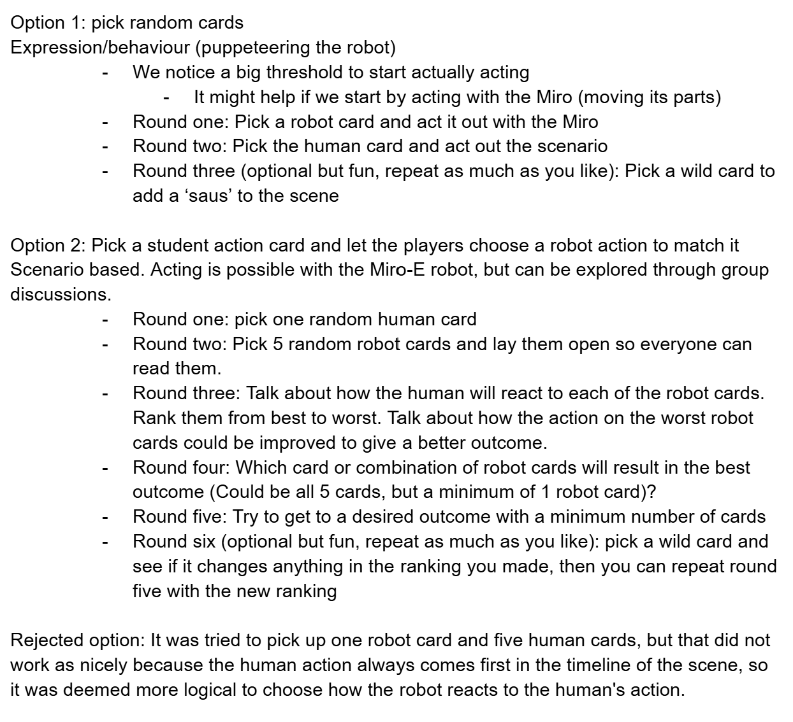
Fig 7.1 Game structure, directions and options.
Validation & Embodied Testing
While the tool generated interesting scenarios, they weren't yet validated against real-world behaviour, as the system still functioned too much as a generative design tool rather than a validated interaction design method. A validation layer was introduced: after designing a scenario, participants physically acted it out using the MIRO-E robot, ensuring each scenario was tested against the robot's actual expressive capabilities and physical constraints.
A structured evaluation form assessed each scenario from an observer's perspective using behavioural criteria on a 1-5 scale:
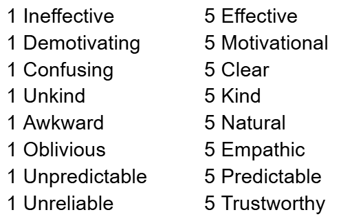
Fig 7.2 Evaluation criteria.
Reflection & Conclusions
This session made clear that generating interesting interaction scenarios is not enough if they aren't grounded in how the robot actually behaves in practice. The original card tool worked well for ideation but tended to produce abstract or overly optimistic ideas that didn't always translate to real embodied behaviour. Introducing structured ranking and evaluation shifted the focus from "what could happen" to "what actually works when enacted": testing through puppeteering with the MIRO-E robot revealed a consistent gap between imagined and perceived behaviour, where timing, motion quality, and physical constraints strongly shaped interpretation.
It also became apparent that small embodiment improvements, such as clearer expressive movements or more consistent signalling, could significantly improve interaction quality without major technical changes. The main learning: robot behaviour design needs a tight loop between ideation, embodiment, and validation, or scenarios risk remaining conceptually appealing but practically unreliable. This marked a shift from generating interesting ideas towards validating whether those ideas actually worked when embodied by the robot.
Tools in Action #2
This session focused on finalising and structuring the Cards Against Robots toolbox, developing gameplay guidelines, evaluation procedures, and methods for translating outcomes into usable design insights.
Consolidating the Toolkit
While earlier iterations focused mainly on designing and testing the card-based interaction concept, this phase shifted toward consolidating the toolkit into a complete, usable design system: improving the visual design of the cards, defining structured gameplay rules, formalising evaluation criteria, and specifying how results should be interpreted and used by designers or researchers.
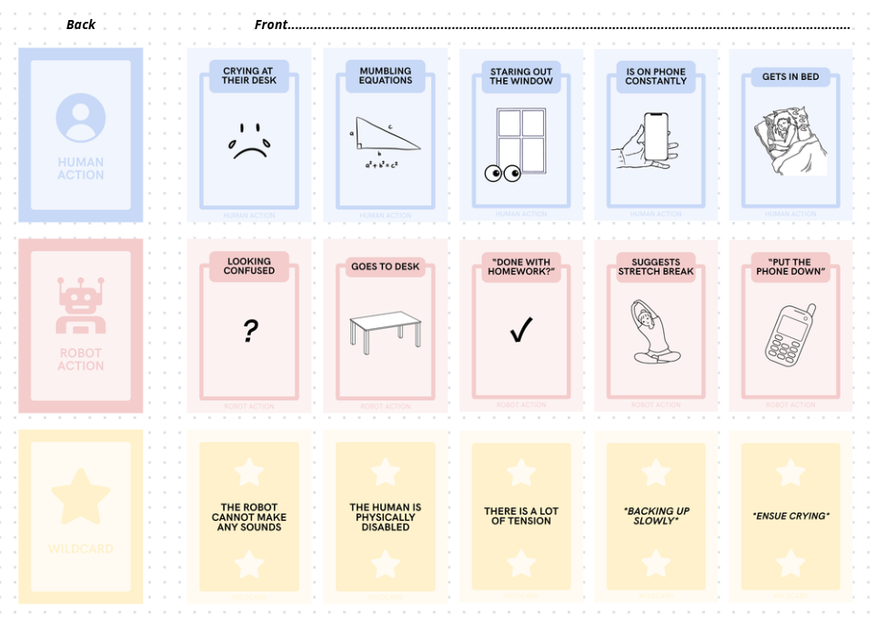
Fig 8.1 Final Cards Against Robots deck, with Human Action, Robot Action, and Wildcard categories.
Tool Structuring: From Concept to System
Two fully defined gameplay modes were developed to explore robot behaviour from different angles, one focused on improvisation and embodiment, the other on structured comparison and evaluation, ensuring the tool supports both creative exploration and systematic analysis.
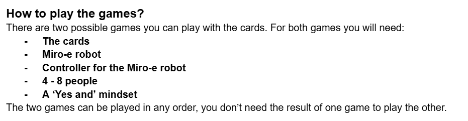
Fig 8.2 Instructions overview shared with players.
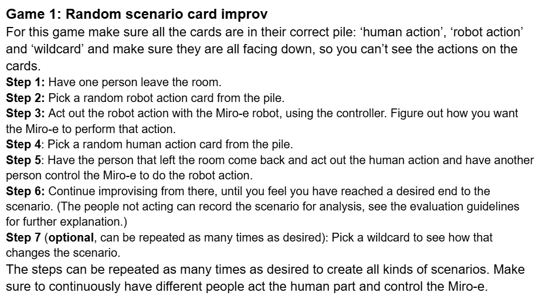
Fig 8.3 Game 1 instruction card.
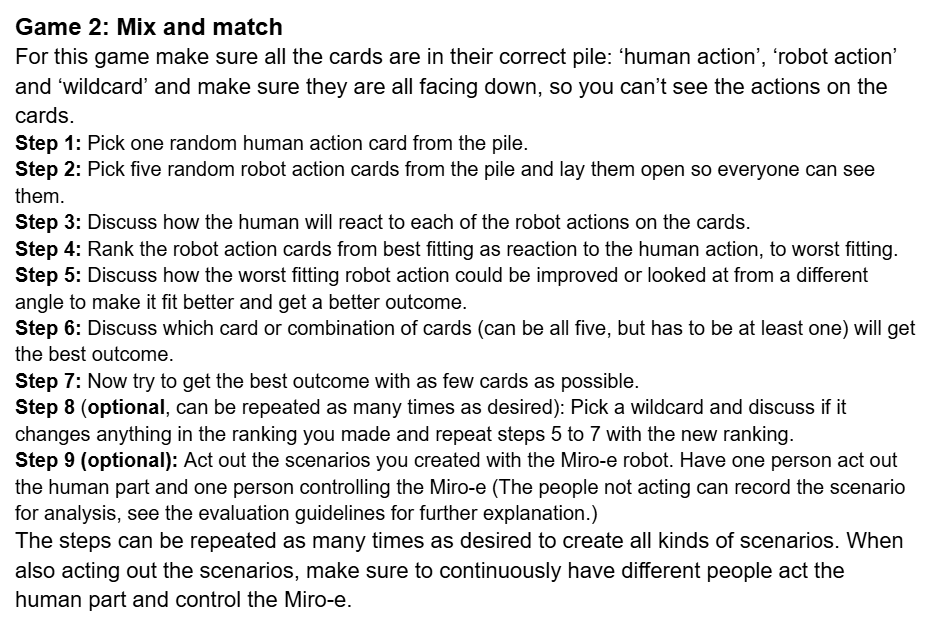
Fig 8.4 Game 2 instruction card.
The resulting toolkit combined many of the insights gathered throughout the course into a single design method that could be applied during the final demonstrations.
Evaluation Framework & Design Integration
A structured evaluation framework ensured scenario outcomes could be assessed consistently rather than relying on subjective interpretation. The criteria were informed by Behavioural Observation Scale methodologies, prioritising measurable, external behaviours over internal assumptions (AIHR, n.d.). The framework also draws on participatory design principles from LEADOR, emphasising iterative, in-context evaluation through active user involvement (Mubin et al., 2021), and aligns with HRI CUES, which assesses interaction quality through observable engagement dimensions like clarity, predictability, and user experience (Sarrica et al., 2024).
Together, these sources support a shift from purely generative scenario design toward a grounded evaluation process, ensuring behavioural outcomes are not only designed but critically examined through structured observation, enabling more reliable iteration of robot behaviour concepts.
References
- AIHR. (n.d.). Behavioral Observation Scale for performance evaluation: What, when and how. aihr.com
- Mubin, O., et al. (2021). LEADOR: A method for end-to-end participatory design of autonomous social robots. arxiv.org/pdf/2105.01910
- Sarrica, M., et al. (2024). HRI Conversational User Enjoyment Scale (HRI CUES). arxiv.org/pdf/2405.01354
Project Demo
This session focused on finalising and preparing the Cards Against Robots toolbox for presentation, refining gameplay guidelines, the evaluation framework, poster design, and video demonstration structure.
At the start of the course I mainly viewed the design challenge as creating helpful robot behaviours for students. Throughout the sessions, my understanding shifted towards designing an entire interaction experience, where embodiment, expectations, ethics, expression, and evaluation all proved just as important as the behaviour itself.
Consolidation Phase
Session 9 acted as a consolidation phase, defining and structuring final deliverables into a coherent system. The main focus was making the tool understandable, reusable, and demonstrable for external audiences, ensuring both gameplay mechanics and evaluation process were clearly documented: packaging the tool not only as a card game, but as a complete behaviour design and evaluation toolkit for exploring robot interaction in embodied scenarios.
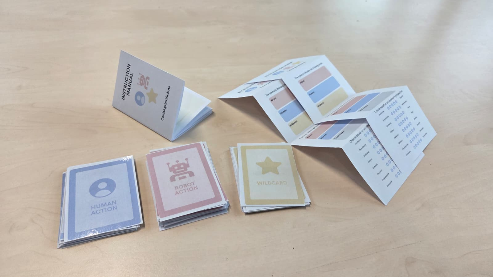
Fig 9.1 Cards Against Robots in action during a session.

Fig 9.2 Final folded card deck and instructions.
Tool Finalisation & Structure
The Cards Against Robots system was refined into a complete instructional framework consisting of two main components: game guidelines, and an evaluation guideline with form.
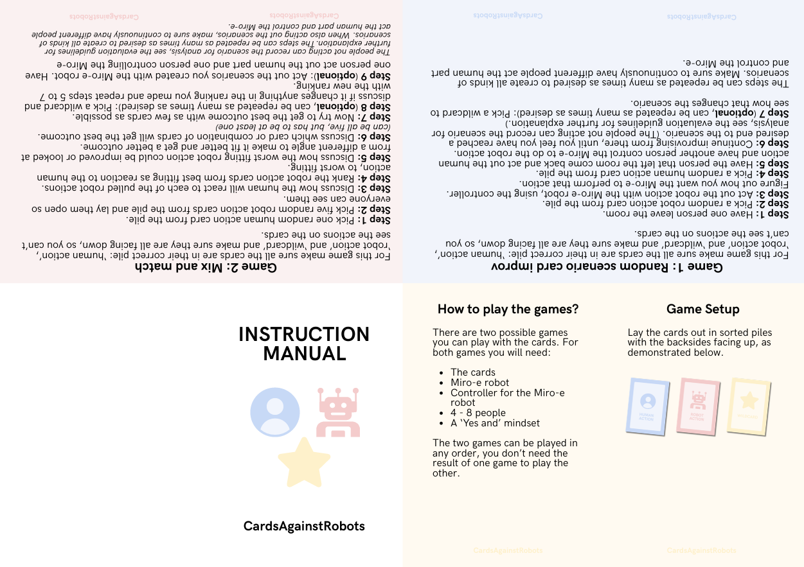
Fig 9.3 Final instruction manual cover and gameplay steps.
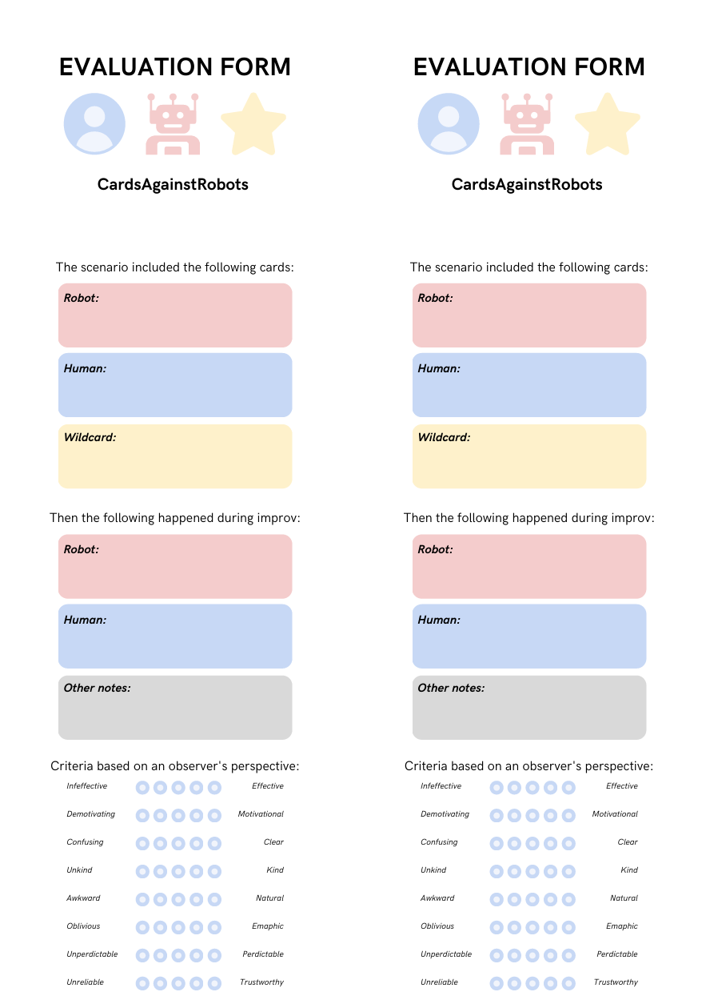
Fig 9.4 Final evaluation form used by observers.
System Integration: Gameplay, Evaluation, Puppeteering & Communication
The final toolkit was consolidated into an integrated system combining structured gameplay, embodied puppeteering, evaluation, and communication outputs. Game 1 supports improvisational exploration of reactive, embodied behaviour using the MIRO-E robot; Game 2 focuses on structured comparison and refinement, ranking multiple robot actions against a single human scenario before optional enactment. Both modes feed into a shared evaluation framework assessing empathy, clarity, effectiveness, predictability, and trustworthiness.
Puppeteering Guidelines
Movement: Left stick: drive forward/backward, turn. Right stick: head yaw (left/right), head pitch (up/down).
Shoulder buttons (hold + stick): L2 + left stick up/down: tail droop. L2 + left stick left/right: tail wag. R2 + right stick left/right: both ears together.
Face buttons: Cross: toggle eyelids open/closed. Square: beep (440 Hz tone).
General tips: Move smoothly, avoid erratic stick input; roleplay realistically and stick to expected behaviour; improvise where it fits; stay open to different interpretations.
Technical & Practical Limitations
The MIRO-E platform currently relies on a tethered connection to a laptop, limiting mobility and slightly restricting the naturalness of interaction. The presence of exposed internal components (when the cap isn't attached) can also distract users during interaction. While these limitations don't prevent use of the system, they influence perception of embodiment and immersion, though giving participants time to familiarise themselves with the robot beforehand helps shift focus from mechanical limitations toward behavioural interpretation.
Evaluation of Outcomes
Initial testing showed how different gameplay modes lead to different types of behavioural insights.
These outcomes demonstrate that robot behaviour effectiveness is highly context-dependent and cannot be fully captured without iterative evaluation and scenario variation.
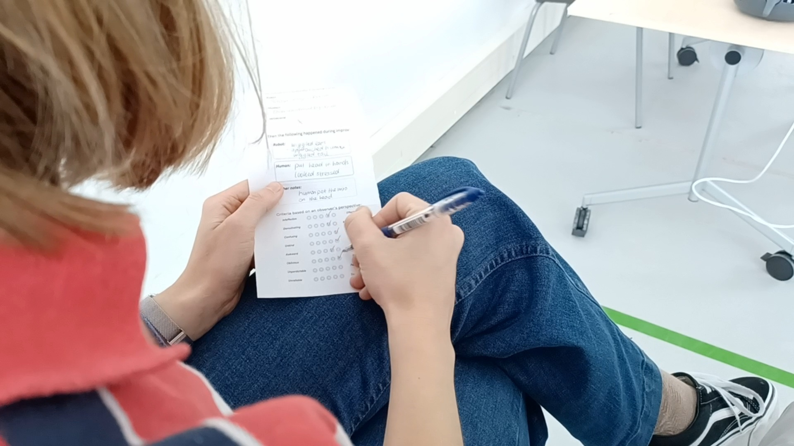
Fig 9.5 Live evaluation, an observer scoring a scenario.
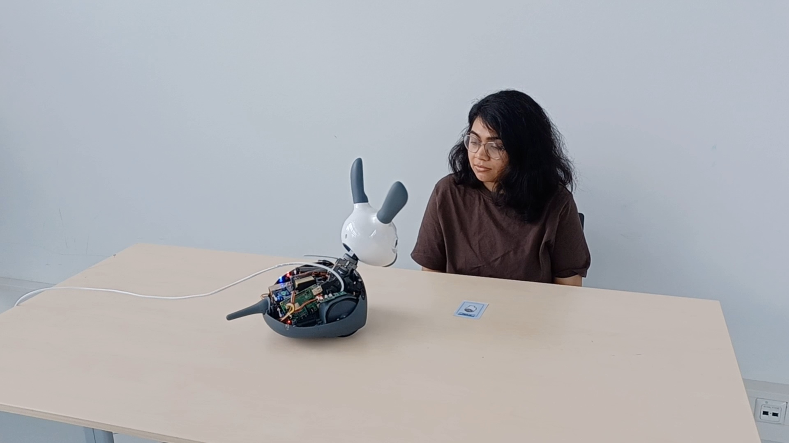
Fig 9.6 Live puppeteering of MiRo-E during testing.
Final Reflection
This session marked the transition from tool development to full system presentation, shifting focus from refining individual components toward ensuring the Cards Against Robots toolkit functioned as a coherent, communicable system. A key insight: the value of the tool lies not only in generating robot behaviours, but in making the design process visible and discussable. By combining gameplay, embodiment, and structured evaluation, the system supports both creative exploration and critical reflection on robot behaviour design.
Testing also revealed that evaluation outcomes are highly sensitive to context and interpretation, reinforcing that robot behaviour design should be treated as an iterative, situated process rather than a fixed set of rules. This final iteration positions the tool as both a design artifact and an analytical framework for exploring human-robot interaction in practice.
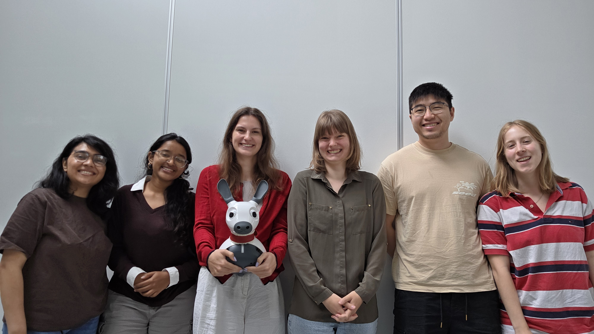
Fig 9.7 The team.